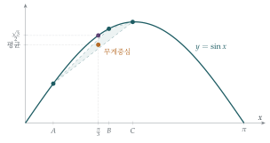

STEP II 2007, 문제 7
계속 읽기 전에 문제를 먼저 읽어 보자. 문제는 STEP Support Programme의 문제 데이터베이스에 있다: step.maths.org/questions/07-s2-q7
도입
3.2 절에서는 교묘한 귀납법(induction)으로 산술-기하 평균 부등식(AM–GM)을 증명하였다. 여기서는 이 부등식이 훨씬 더 큰 원리의 특수한 경우로서 단 한 줄 만에 얻어진다. 그 큰 원리는 바로 오목성(concavity), 즉 언덕 꼭대기처럼 아래로 휘어지는 곡선의 모양이다. 이러한 곡선에 관한 기하학적 사실 하나, 곧 곡선이 자신의 현(chord)보다 위에 있다는 사실만으로 놀라울 만큼 다양한 부등식을 증명할 수 있다. 삼각형에 관한 사실에서 AM–GM, 그리고 확률론, 정보 이론, 경제학의 부등식에 이르기까지 말이다.
대학에서 이 아이디어는 볼록성(convexity)이 되며, 현대 수학 전체를 하나로 꿰는 위대한 주제 가운데 하나이다. 볼록 최적화(convex optimisation)와 같은 분야 전체가 이 개념 위에 세워져 있다.
시작하기 전에
\((0, \pi)\)에서의 \(y = \sin x\)처럼 아래로 휘어지는 곡선을 그려 보자. 곡선 위에 두 점을 찍고 직선으로 이어 보자. 현은 곡선보다 위에 있는가, 아래에 있는가?
아래에 있다. 오목한 곡선에서는 모든 현이 두 끝점 사이에서 곡선보다 아래에 놓인다. 두 함숫값의 평균은 현의 중점의 높이이고, 평균에서의 함숫값은 그 중점 위에 있는 곡선의 높이이다. 따라서 “현이 곡선보다 아래에 있다”는 것은 정확히 \(n = 2\)일 때의 젠센 부등식(Jensen’s inequality)이다. \[\frac{\mathrm{f}(x_1) + \mathrm{f}(x_2)}{2} \leq \mathrm{f}\left( \frac{x_1 + x_2}{2} \right).\] 점이 \(n\)개일 때, 점 \((x_k, \mathrm{f}(x_k))\)들의 평균은 이들의 무게중심(centre of mass)이고, 이는 곡선 아래 영역의 내부에 있으므로 역시 곡선보다 아래에 있다(그림 3.3.1).
차근차근 풀기
단계 1 오목성 확인하기
\(0 < x < \pi\)에서 \(\frac{\mathrm{d}^2}{\mathrm{d}x^2}\sin x = -\sin x < 0\)이고, \(x > 0\)에서 \(\frac{\mathrm{d}^2}{\mathrm{d}x^2}\ln x = -\frac{1}{x^2} < 0\)이다.■
단계 2 삼각형
어떤 함수와 어떤 점들을 택해야 하며, 그 점들의 평균은 무엇인가? 삼각형의 각들은 함수가 오목한 구간 안에 있는가?
\(\mathrm{f}(x) = \sin x\)와 세 점 \(A, B, C\)를 택하자. 각각은 \(\sin\)이 오목한 구간인 \(0\)과 \(\pi\) 사이에 엄격하게 놓여 있으며, 이들의 평균은 \(\frac{A + B + C}{3} = \frac{\pi}{3}\)이다. 젠센 부등식에 의해 \[\frac{\sin A + \sin B + \sin C}{3} \leq \sin\frac{\pi}{3} = \frac{\sqrt3}{2},\] 이므로 \(\sin A + \sin B + \sin C \leq \frac{3\sqrt3}{2}\)이고, 등호는 정확히 정삼각형일 때 성립한다.■

단계 3 한 줄로 끝내는 AM–GM
AM–GM은 곱과 합을 비교한다. 곱을 합으로 바꾸어 주는 오목함수는 무엇인가?
바로 로그함수이다. \(\mathrm{f} = \ln\)과 양수 \(t_1, \ldots, t_n\)에 젠센 부등식을 적용하면 \[\frac{\ln t_1 + \cdots + \ln t_n}{n} \leq \ln\left( \frac{t_1 + \cdots + t_n}{n} \right).\] 좌변은 \(\ln\bigl(\sqrt[n]{t_1 \cdots t_n}\bigr)\)이다. \(\ln\)은 증가함수이므로 양변에서 \(\ln\)을 없앨 수 있고, 그것이 곧 AM–GM이다. 등호는 정확히 모든 \(t_k\)가 같을 때 성립한다.■
단계 4 AM–GM 활용하기
(a)에서 좌변은 네 항의 합이고 우변에는 세 변수의 곱이 들어 있다. 몇 개의 항에 AM–GM을 적용해야 하며, \(16\)은 왜 도움이 되는가?
네 양수 \(x^4\), \(y^4\), \(z^4\), \(16\)에 AM–GM을 적용하면 \[\frac{x^4 + y^4 + z^4 + 16}{4} \geq \sqrt[4]{16\,x^4 y^4 z^4} = 2xyz.\] 양변에 \(4\)를 곱하면 \(x^4 + y^4 + z^4 + 16 \geq 8xyz\)를 얻는다.■
이제 \(x^5 + y^5 + z^5 - 5xyz\)의 최솟값을 구해 보자. (힌트: \(x^5y^5z^5\)의 다섯제곱근이 필요하므로 수가 다섯 개 있어야 한다. 나머지 두 수는 무엇이어야 할까?)
\(x^5, y^5, z^5, 1, 1\)에 AM–GM을 적용하면 \[\frac{x^5 + y^5 + z^5 + 1 + 1}{5} \geq \sqrt[5]{x^5y^5z^5} = xyz,\] 이므로 \(x^5 + y^5 + z^5 - 5xyz \geq -2\)이다. 등호는 \(x^5 = y^5 = z^5 = 1\), 즉 \(x = y = z = 1\)일 때 성립하며, 이때 식의 값은 \(3 - 5 = -2\)이다. 따라서 최솟값은 \(-2\)이다.■
등호 조건(equality condition)이 두 가지 역할을 한다는 점에 주목하자. 등호 조건은 이 하한이 실제로 달성됨을 보여 주므로, \(-2\)는 단순한 하한이 아니라 최솟값이다.
돌아보기
하나의 아이디어, 많은 부등식. 오목한 곡선에 관한 기하학적 사실 하나로 삼각형에 관한 결과와 AM–GM을 얻었으며, 이계도함수(second derivative)를 확인하는 것 말고는 계산이 전혀 필요하지 않았다.
함수와 점을 고르라. 젠센 부등식을 쓴다는 것은 어떤 함수에, 어떤 점들에서 적용할지를 정하는 일이다. 곱을 합으로 바꾸어 주는 로그함수가 단골 선택이다.
채워서 맞추라. (b)에서는 \(1\) 두 개를 더함으로써 AM–GM을 문제에 꼭 맞게 만들었다. 3.2 절에서 평균으로 채워 넣었던 것과 같은 방식이다.
숨은 수학
대학에서 쓰는 볼록(convex)함수(오목함수를 뒤집은 것)의 표준적인 정의에는 도함수가 전혀 등장하지 않는다. 함수 \(\mathrm{f}\)가 볼록하다는 것은 \[\mathrm{f}\bigl(t x_1 + (1-t)x_2\bigr) \leq t\,\mathrm{f}(x_1) + (1-t)\,\mathrm{f}(x_2) \qquad\text{모든 } x_1, x_2 \text{ 와 } 0 \leq t \leq 1,\] 에 대하여 이 부등식이 성립한다는 것이며, 이는 정확히 현이 곡선보다 위에 있다는 뜻이다. 이 정의는 \(|x|\)처럼 미분가능하지 않은 함수나 다변수함수에도 의미가 있다. 덴마크의 공학자이자 수학자인 Johan Jensen은 1906년에 자신의 이름이 붙은 부등식과 함께 볼록함수를 독립된 연구 주제로 만들었다.
어디에나 있는 볼록성
볼록성은 수학과 그 응용 곳곳에 등장한다.
확률. 젠센 부등식에 따르면 오목함수 \(\mathrm{f}\)와 임의의 확률변수(random variable) \(X\)에 대하여 \(\mathrm{E}[\mathrm{f}(X)] \leq \mathrm{f}(\mathrm{E}[X])\)이다. 경제학에서 \(\mathrm{f}\)를 오목한 “효용(utility)” 함수로 택하면, 이 부등식은 사람들이 £0 또는 £200을 반반의 확률로 받는 도박보다 확실한 £100을 더 선호하는 이유, 그리고 보험이 존재하는 이유를 설명해 준다.
정보 이론. 엔트로피(entropy)가 균등분포(uniform distribution)에서 최대가 된다는 사실의 증명은 \(\ln\)에 대한 젠센 부등식이며, 이 사실은 데이터 압축의 바탕이 된다.
최적화. 볼록함수에는 전역 최솟값(global minimum) 외의 극솟값(local minimum)이 없으므로, “내리막으로 걸어가기”만 하면 언제나 최선의 답을 찾을 수 있다. 이것이 볼록 최적화 문제를 효율적으로 풀 수 있는 이유이며, 문제를 볼록한 형태로 바꾸어 쓰는 데 그토록 많은 노력이 들어가는 이유이다.
3.4 절에서는 볼록성의 또 다른 면, 즉 함수와 그 역함수 사이의 기하학적 쌍대성(duality)을 살펴볼 것이다.
사고 기술
여러 결과의 증명이 서로 비슷할 때는 그 뒤에 숨은 하나의 원리를 찾으라. 그런 다음 그 원리를 한 번 증명하고 여러 번 적용하라.
AM–GM, 사인에 관한 삼각형 부등식을 비롯한 많은 부등식은 모두 “오목한 곡선은 자신의 현보다 위에 있다”는 원리의 예이다. 원리를 알아보는 순간, 잡다한 요령의 모음이 하나의 방법이 된다.
더 도전하기
정의. STEP II 2018, 문제 2의 소문항 (i)과 (ii)는 위 상자에 나온 오목성의 현 정의에서 출발하여 세 점에 대한 젠센 부등식까지 쌓아 올린다.
사인의 곱. STEP II 2018, 문제 2의 소문항 (iii)을 풀어 보자.
예각삼각형. \(\tan x\)가 \((0, \frac\pi2)\)에서 볼록함을 보이고, 이로부터 예각삼각형에서 \(\tan A + \tan B + \tan C \geq 3\sqrt3\)임을 이끌어 내라.
거듭제곱 평균. \(x^2\)이 볼록함을 보이고, 이로부터 \(\left(\frac{a_1 + \cdots + a_n}{n}\right)^2 \leq \frac{a_1^2 + \cdots + a_n^2}{n}\)임을 이끌어 내라. 이를 수들의 집합의 분산(variance)에 관한 명제로 해석해 보라.
더 읽을거리
J. Michael Steele, The Cauchy–Schwarz Master Class (Cambridge University Press). 6장 은 볼록성과 젠센 부등식을 다룬다.
Claudi Alsina & Roger Nelsen, When Less Is More: Visualizing Basic Inequalities (Mathematical Association of America). 그림으로 증명하는 부등식들을 담았으며, 그중 상당수가 볼록성을 이용한다.
Stephen Boyd & Lieven Vandenberghe, Convex Optimization (Cambridge University Press). 온라인에서 무료로 볼 수 있는 현대의 고전으로, 앞부분의 장들은 볼록성이 실제로 왜 중요한지 보여 준다.